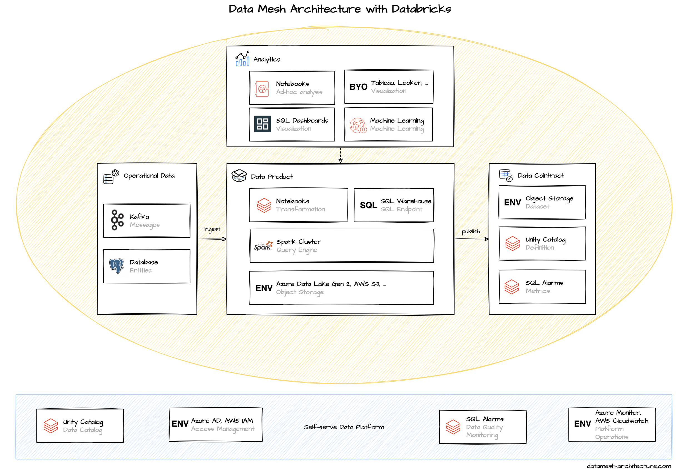

- Databricks is another relevant vendor for a data platform - Databricks is the company the built Spark - Popular in ML - Delta/Deltalake/... - Databricks is a full-featured platform that runs on top of one of the three cloud providers. - With Azure, Microsoft is business partner - uses Cloud Resources (Object Storage, Compute, Access) from cloud provider
The starting point in databricks is the workspace. Each team typically creates their own workspace, and in their workspace their own clusters for their computing needs. These clusters come with a configured Spark Runtime as query engine. The clusters are mapped to cloud provider's compute instances and can be scaled elastically with the workloads to execute code and queries.
Storage
With Spark, the import, transformation, and export of data is typically coded in Jupyter-like notebooks using Python, Scala, or Spark SQL, especially for explorative analysis. The code is usually managed in a connected Git repository.
For production-ready workflows, those notebooks can be scheduled as Databricks Jobs, or Notebooks are replaced with tested libraries, deployed as Python Wheel or JARs.
Data product - notebook: the code, including import, transform, validation, and export; lots of freedom (sql, python, ...); custom step to publish data product description may be helpful (dynamic infos) - policy automation through shared libraries

Mental load: medium to high
Use shared cluster to increase performance by managing costs.
Databricks instance can be deployed in AWS, GCP, or Azure. Databricks on AWS and GCP are provided by Databricks and subject to Databrick's terms, but Databricks on Azure is provided by Microsoft and is subject to Microsoft's terms. access management of databricks to the cloud provider is cumbersome -> platform (enablement) team must help here
Databricks Premium: SQL warehouse, SQL dashboards, SQL Alarms, SQL endpoint for sharing a data product
- Jobs
- dbt integration for more complex pipelines -> we assume that's not necessary for typical data products in a data mesh

{kind=link}
{kind=link}